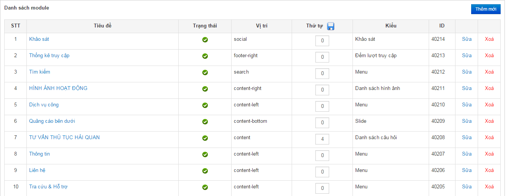
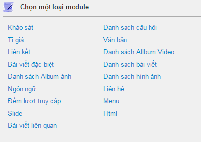
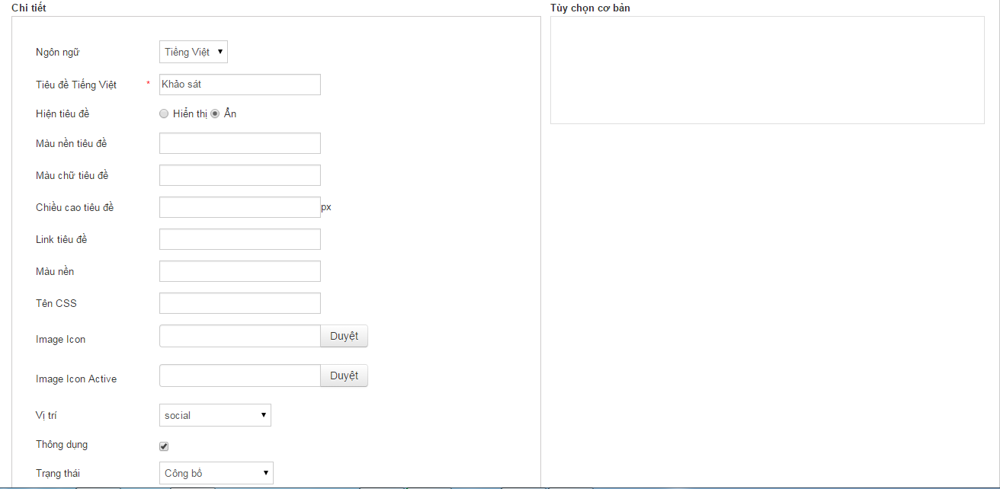
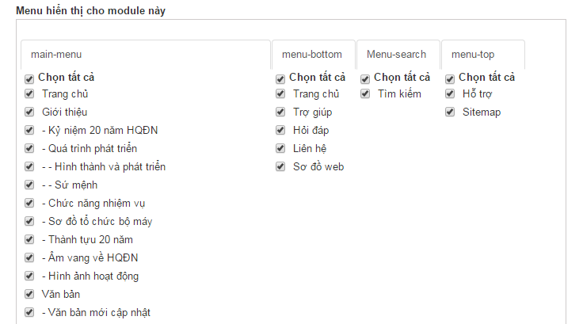
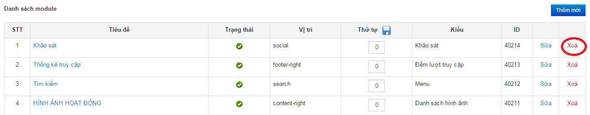
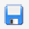
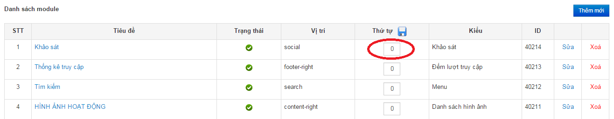
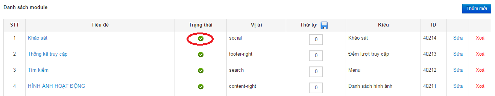

VI. Quản lý Module
Module là các thành phần của trang web như menu, thống kê truy cập, chia sẻ… Để quản lý thông tin module ta thực hiện các công việc sau:
1.Thêm Module
- Vào E.Modules -> 1.Quản lý Module

- Nhấn nút thêm mới

-
Chọn loại module cần thêm mới.
Trong giao diện thêm mới gồm có 3 phần:
Chi tiết: gồm các thông tin cơ bản của module
-
Ngôn ngữ: chọn Tất cả để module hiển thị cho tất cả ngôn ngữ hoặc chọn một ngôn ngữ để module chỉ hiển thị cho chính ngôn ngữ đó.
-
Hiện tiêu đề: Hiển thị hoặc ẩn tiêu đề của module
-
Màu nền tiêu đề
-
Màu chữ tiêu đề
-
Chiều cao tiêu đề
-
Link tiêu đề: Khi click vào tiêu đề sẽ đi tới đường link (url)
-
Màu nền: Màu nền module
-
Tên CSS
-
Image icon
-
Image Icon Active
-
Vị trí: Vị trí hiển thị của module
-
Thông dụng: Chỉ định module có hiển thị mặc định khi tạo menu mới hay không. (Khi check thì sẽ hiển thị)
-
Trạng thái: Ẩn hoặc hiển thị module ( Công bố: hiển thị module, Chưa được công bố: ẩn module)

Tùy chọn cơ bản:
Tùy thuộc vào mỗi loại module sẽ có các thiết lập khác nhau. Xem chi tiết trong mục Các loại module/ Kiểu menu.
Menu hiển thị cho module này:
Phần này chỉ định module sẽ hiển thị trong menu nào. Chỉ menu nào được check thì mới hiển thị module hiện tại.

2. Sửa Module
-
Vào E.Modules -> 1.Quản lý Module
-
Chọn Module cần sửa, nhấn nút sửa để vào giao diện chỉnh sửa module, sửa nội dung giống như phần thêm mới rồi nút lưu để cập nhật nội dung của Module.
3. Xóa module
- Vào E.Modules -> 1.Quản lý Module -> Chọn module cần xóa nhấn nút xóa để xóa modules

4. Thay đổi thứ tự sắp xếp của module
- Để thay đổi thứ sắp xếp của các module trong cùng một vị trí
- Vào E.Modules -> 1.Quản lý Module -> nhập thứ tự -> Nhấn nút  để cập nhật lại thứ tự hiển thị của các modules

5. Ẩn/Hiện Module
-
Để ẩn/hiện module vào E.Modules -> 1. Quản lý module -> Click chuột vào biểu tượng thái của module cần ẩn/hiện ( Hiển thị, ẩn).

-
Hoặc có thể vào E.Modules -> 1.Quản lý module -> Nhấn nút sửa -> Trong khung chi tiết chọn trạng thái của module -> Nhấn nút lưu để hoàn tất.